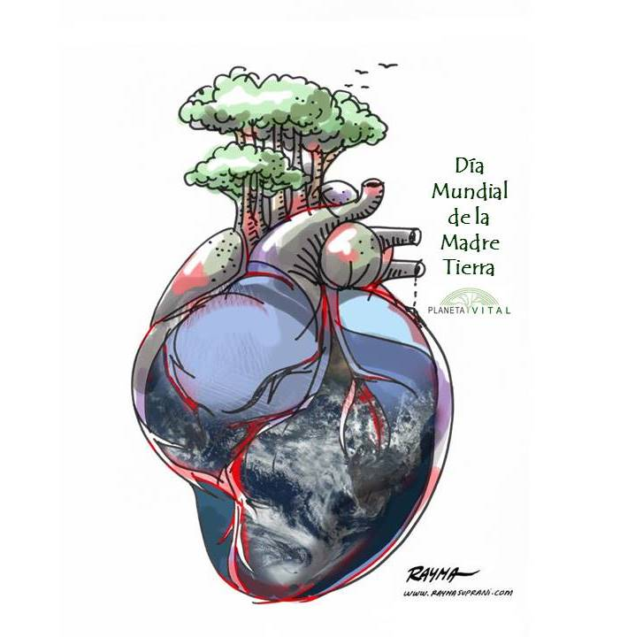
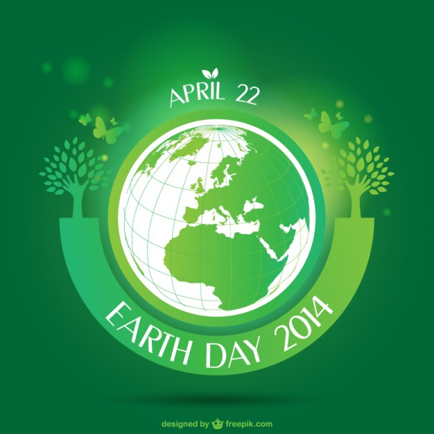
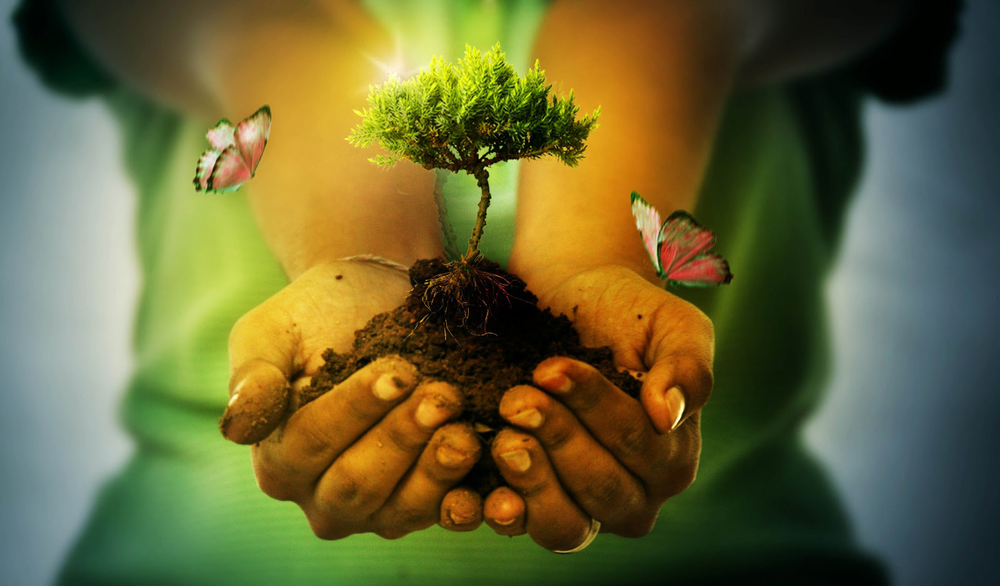
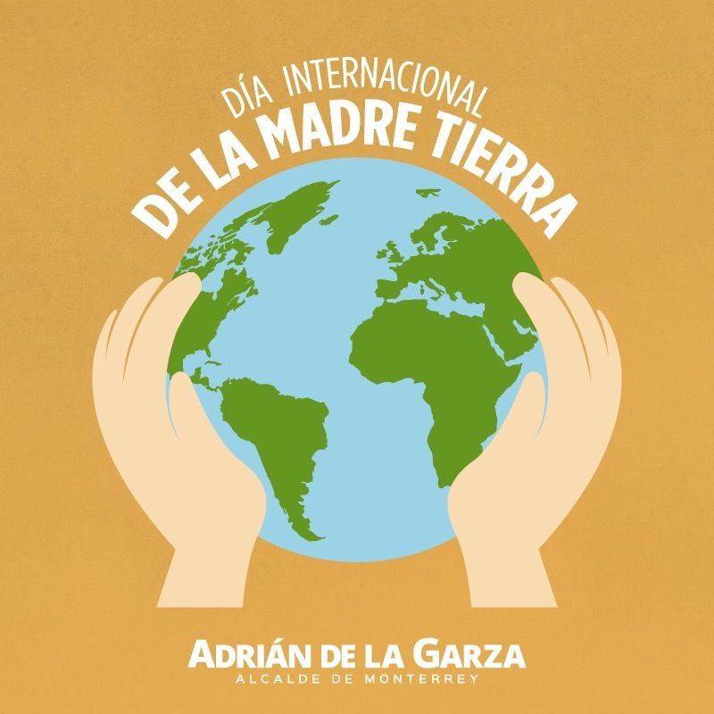
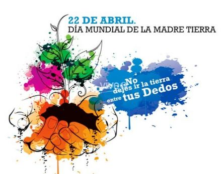

Día Internacional de la madre Tierra (22 de Abril)


- 
- 
- 
Realizado por:
José Armando Pedraza Cabrera
4°- "E"
Especialidad:
Programación
Submódulo:
Desarrolla Aplicaciones Web
Docente:
Lic. José Antonio Gómez Hernández
4°- "E"
Programación
Desarrolla Aplicaciones Web
Lic. José Antonio Gómez Hernández
Celebramos el Día Internacional de la Madre Tierra para recordar que el planeta y sus ecosistemas nos dan la vida y sustento. Con este día, asumimos, además, la responsabilidad colectiva, como nos recordaba la Decalración de Río de 1992, de fomentar esta armonía con la naturaleza y la Madre Tierra.
Este día nos brinda también la oportunidad de concienciar a todos los habitantes del planeta acerca de los problemas que afectan a la Tierra y a las diferentes formas de vida que en él se dearrollan.
La Conferencia de las Naciones Unidas sobre el Medio Humano de 1972 celebrada en Estocolmo sentó las bases de la toma de conciencia mundial sobre la relación de interdependencia entre los seres humanos, otros seres vivos y nuestro planeta. Asimismo, se estableció el 5 de junio como el Día Mundial del Medio Ambiente y se creó el Programa de las Naciones Unidas para el Medio Ambiente (PNUMA), la agencia de la ONU encargada de establecer la agenda ambiental a nivel global, promover la implementación coherente de la dimensión ambiental del desarrollo sostenible en el sistema de las Naciones Unidas y actuar como un defensor autorizado del medio ambiente.
En 1992, más de 178 países firmaron la Agenda 21, la Declaración de Río sobre el Medio Ambiente y el Desarrollo, y la Declaración de Principios para la Gestión Sostenible de los Bosques en la Conferencia de Naciones Unidas sobre el Medio Ambiente y el Desarrollo (UNCED), que tuvo lugar en Río de Janeiro (Brasil) del 3 y el 14 de junio de 1992.
Madre Tierra es una expresión común utilizada para referirse al planeta Tierra en diversos países y regiones, lo que demuestra la interdependencia existente entre los seres humanos, las demás especies vivas y el planeta que todos habitamos.
La Tierra y sus ecosistemas son nuestro hogar. Para alcanzar un justo equilibrio entre las necesidades económicas, sociales y ambientales de las generaciones presentes y futuras, es necesario promover la armonía con la naturaleza y el planeta.
En el año 2005, la Asamblea General declaró 2008 como el Año Internacional del Planeta Tierra para promover la enseñanza de las Ciencias de la Tierra para facilitar a la humanidad los instrumentos necesarios para el uso sostenible de los recursos naturales, y para construir la infraestructura científica esencial para el desarrollo sostenible.
El Diálogo se realizó con el objetivo de inspirar a los ciudadanos y las sociedades a reconsiderar la relación que mantienen con la naturaleza, acorde a la meta 12.8 de los Objetivos de Desarrollo Sostenible con respecto a los patrones de consumo y producción sostenibles.
Mejorar la base ética de la relación entre la especie humana y la Tierra en el contexto del desarrollo sostenible no es solo beneficioso, sino también necesario.
En diciembre de 2009 la Asamblea General aprobó la resolución 64/236, en virtud de la cual decidió organizar la Conferencia de las Naciones Unidas sobre el Desarrollo Sostenible.
Esta Conferencia se realizará en Río de Janeiro (Brasil) en junio de 2012, 20 años después de la Conferencia de las Naciones Unidas sobre el Medio Ambiente y el Desarrollo, conocida como Cumbre para la Tierra, y constituye una oportunidad histórica para hacer un balance de lo sucedido en estas dos décadas, evaluar los advances logrados y las dificultades encontradas y explorar nuevas formas de cooperación que permitan acelerar la transición hacia un desarrollo sostenible.
Los Estados Miembros han acordado analizar dos temas principales para la Conferencia: